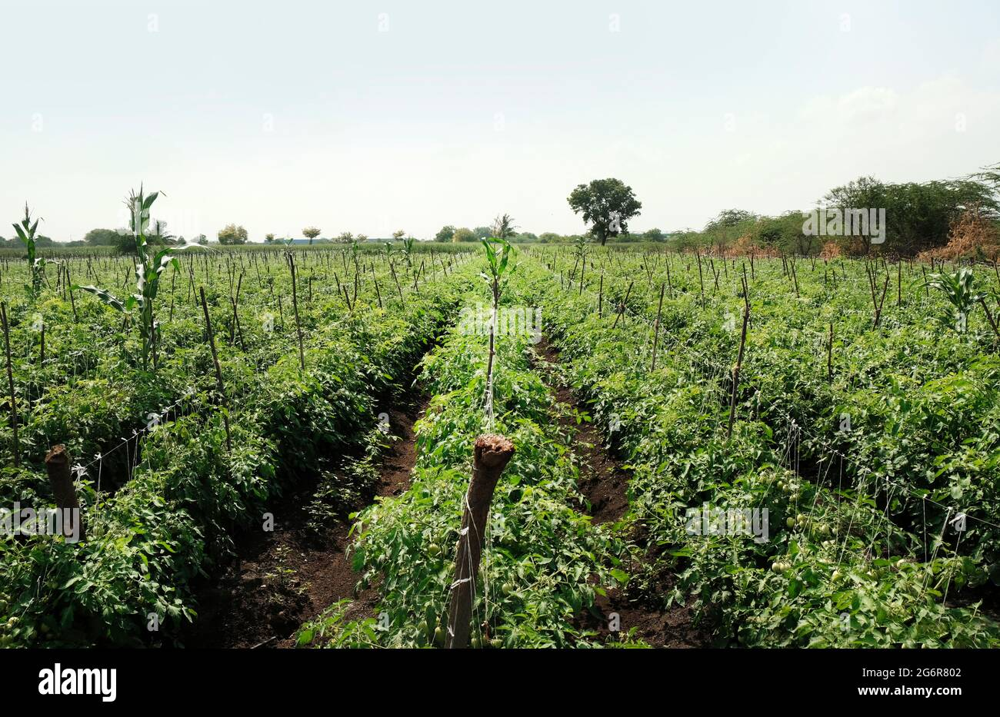

Tomato: The Versatile Crop

Uses of Tomato
Tomatoes are widely used in culinary applications around the world:
- Food: Eaten fresh, in salads, sauces, soups, and as a base in many recipes.
- Preserves: Commonly used to make ketchup, pasta sauce, and canned tomatoes.
- Juice: Tomato juice is a popular beverage, often used as a cocktail ingredient.
Types of Tomato
Various types of tomatoes are cultivated for different purposes:
- Cherry Tomatoes: Small, sweet, and perfect for salads.
- Beefsteak Tomatoes: Large, juicy, and ideal for sandwiches and slicing.
- Roma Tomatoes: Known for their low moisture, perfect for sauces and pastes.
- Heirloom Tomatoes: Unique flavors and colors, often used in gourmet cooking.
Growth Requirements for Tomato
Tomatoes thrive under the following conditions:
- Climate: Prefer warm climates with temperatures between 20-30°C.
- Soil: Well-drained, fertile soil with a pH of 6.0-6.8.
- Water: Consistent watering is essential, especially during fruiting.
Natural Fertilizers for Tomato
Organic fertilizers are highly beneficial for tomato plants:
- Compost: Provides essential nutrients and improves soil structure.
- Bone Meal: Rich in phosphorus, supports root and fruit development.
- Fish Emulsion: Offers a balanced nitrogen source, promoting healthy growth.
Pest and Disease Prevention
Common pests and diseases in tomato plants can be controlled by:
- Aphids: Controlled by using neem oil or natural predators like ladybugs.
- Blight: Prevent by rotating crops and using resistant varieties.
- Tomato Hornworm: Removed manually or controlled with natural pesticides.
Benefits of Tomato
- Rich in Nutrients: High in vitamins C and K, as well as antioxidants like lycopene.
- Heart Health: Lycopene in tomatoes has been linked to improved heart health.
- Skin Health: The vitamins and antioxidants in tomatoes help in maintaining healthy skin.
Frequently Asked Questions
1. How long does it take to grow tomatoes?
Tomatoes typically take about 60-85 days from planting to harvest, depending on the variety.
2. Can tomatoes be grown in containers?
Yes, many tomato varieties are suitable for container gardening, especially compact or dwarf types.
Back to Crop List